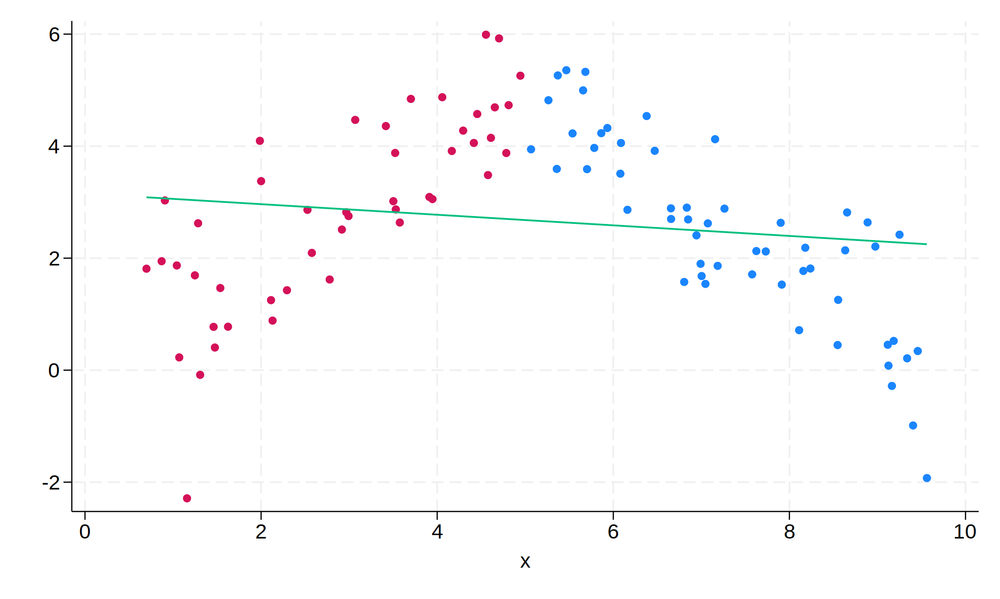
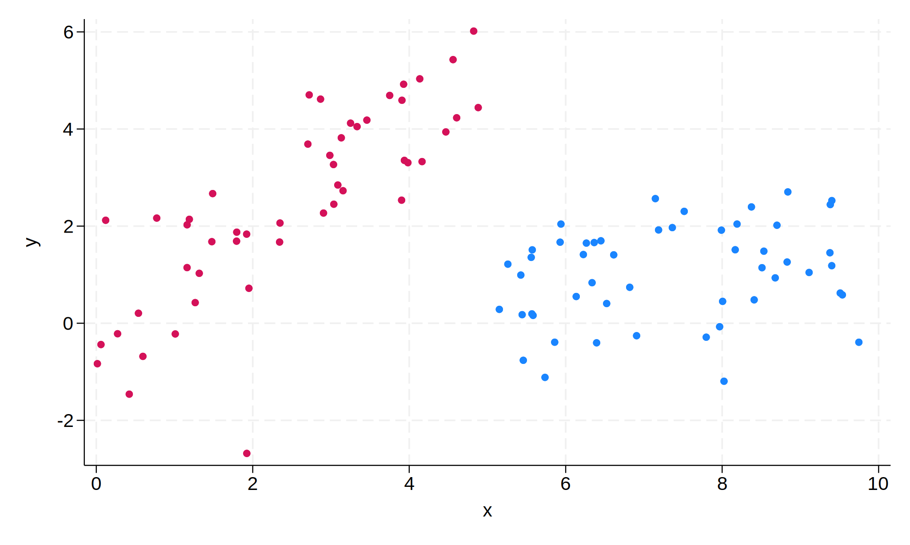
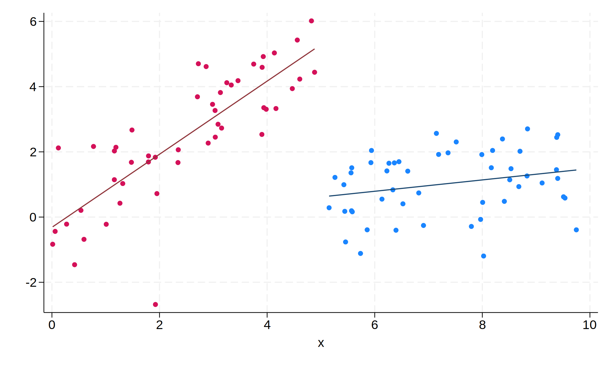
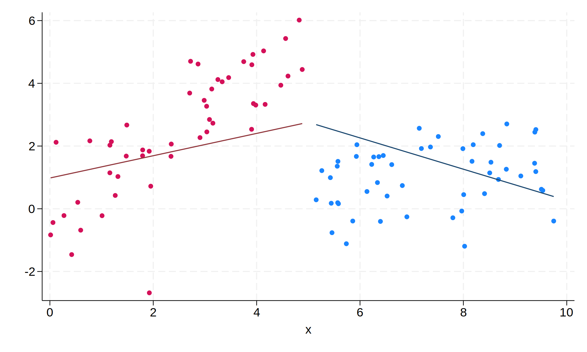

Splines vs Interactions
Linear splines are sometimes used when looking at interrupted time series models. For example, consider the scatter plot below.

The slope amongst the red points (x < 5) is clearly
different from the slope amongst the blue points (x >
5). The best fit line fails to capture this at all.
Imagine that x is time, and at x = 5, some
intervention took place. The goal is to capture the change in slope that
occurs after the intervention. One easy approach would be to fit
separate pre and post models, and test for equality of coefficients.
However, we can also address this with a single model.
A linear spline model (as fit by
Stata’s mkspline)
can capture that change in trend. Including an indicator for pre/post
even allows a discontinuity at x = 5 instead of the typical
continuous spline. However, splines can be harder to interpret and more
complicated to work with. This document will demonstrate that an
interaction model is equivalent to the linear spline model, and with a
simple re-scaling, easier to interpret.
Data generation
Let’s create a slightly more general data set where there is a “jump” (discontinuity) at intervention in addition to the change in trend.
. set seed 123 . set obs 100 Number of observations (_N) was 0, now 100. . gen x = runiform(0, 10) . sort x // To ease plotting later . gen z = x > 5 . gen y = x + z - x*z + rnormal() . twoway (scatter y x if z == 1) (scatter y x if z == 0), legend(off)
Now there’s a drop of around 4 at the intervention addition to a flattening of the slope.
Obtain Pre and Post Slopes
For comparison purposes, let’s obtain the slopes in each time period.
. reg y x if z == 0
Source | SS df MS Number of obs = 49
-------------+---------------------------------- F(1, 47) = 95.20
Model | 122.497641 1 122.497641 Prob > F = 0.0000
Residual | 60.4737606 47 1.28667576 R-squared = 0.6695
-------------+---------------------------------- Adj R-squared = 0.6625
Total | 182.971402 48 3.81190421 Root MSE = 1.1343
------------------------------------------------------------------------------
y | Coefficient Std. err. t P>|t| [95% conf. interval]
-------------+----------------------------------------------------------------
x | 1.120889 .114877 9.76 0.000 .8897861 1.351992
_cons | -.3142624 .3280456 -0.96 0.343 -.9742049 .3456802
------------------------------------------------------------------------------
. reg y x if z == 1
Source | SS df MS Number of obs = 51
-------------+---------------------------------- F(1, 49) = 3.28
Model | 3.09495007 1 3.09495007 Prob > F = 0.0763
Residual | 46.2570745 49 .944021929 R-squared = 0.0627
-------------+---------------------------------- Adj R-squared = 0.0436
Total | 49.3520246 50 .987040492 Root MSE = .97161
------------------------------------------------------------------------------
y | Coefficient Std. err. t P>|t| [95% conf. interval]
-------------+----------------------------------------------------------------
x | .1740924 .0961488 1.81 0.076 -.0191259 .3673106
_cons | -.2529795 .7166825 -0.35 0.726 -1.693207 1.187248
------------------------------------------------------------------------------
So the pre slope is 1.12 and the post slope is 0.17. Their difference is -0.95.
Spline Version
The “intervention” takes place at x = 5, so let’s create
the spline with a knot there.
. mkspline x0 5 x1 = x, marginal
With the marginal option, x0’s coefficient
will represent the pre-intervention slop and x1’s
coefficient the difference between the pre- and post-intervention slopes
(similar to an interaction).
Without marginal, x1’s coefficient is the
post-intervention slope. Note that this will not change the model, but
is a simple reparameterization.
Spline Model 1 - Continuous at intervention
First, we’ll predict y using only the splines. This
forces a continuity at intervention.
. reg y x0 x1
Source | SS df MS Number of obs = 100
-------------+---------------------------------- F(2, 97) = 7.80
Model | 39.4548103 2 19.7274052 Prob > F = 0.0007
Residual | 245.243921 97 2.52828785 R-squared = 0.1386
-------------+---------------------------------- Adj R-squared = 0.1208
Total | 284.698732 99 2.87574476 Root MSE = 1.5901
------------------------------------------------------------------------------
y | Coefficient Std. err. t P>|t| [95% conf. interval]
-------------+----------------------------------------------------------------
x0 | .3556084 .1234556 2.88 0.005 .1105831 .6006337
x1 | -.8545032 .2247994 -3.80 0.000 -1.300668 -.4083387
_cons | .980893 .4252536 2.31 0.023 .1368824 1.824904
------------------------------------------------------------------------------
. est store spline1
. predict y_spline1
(option xb assumed; fitted values)
. twoway (scatter y x if z == 1) (scatter y x if z == 0) ///
> (line y_spline1 x if z == 1, lcolor(navy)) ///
> (line y_spline1 x if z == 0, lcolor(maroon)), ///
> legend(off)

The continuity at x = 5 makes this a poor fit in both
regions. The visual discontinity is due the way the plot is generated
and is not real; in reality the lines intersect at 5.
Spline Model 2 - Discontinuous at intervention
Simply adding z to the model will allow a discontinuity.
. reg y x0 x1 z
Source | SS df MS Number of obs = 100
-------------+---------------------------------- F(3, 96) = 53.36
Model | 177.967897 3 59.3226322 Prob > F = 0.0000
Residual | 106.730835 96 1.11177953 R-squared = 0.6251
-------------+---------------------------------- Adj R-squared = 0.6134
Total | 284.698732 99 2.87574476 Root MSE = 1.0544
------------------------------------------------------------------------------
y | Coefficient Std. err. t P>|t| [95% conf. interval]
-------------+----------------------------------------------------------------
x0 | 1.120889 .1067845 10.50 0.000 .9089234 1.332854
x1 | -.9467965 .1492995 -6.34 0.000 -1.243154 -.6504395
z | -4.6727 .4186314 -11.16 0.000 -5.503677 -3.841723
_cons | -.3142624 .3049362 -1.03 0.305 -.9195559 .2910311
------------------------------------------------------------------------------
. est store spline2
. predict y_spline2
(option xb assumed; fitted values)
. twoway (scatter y x if z == 1) (scatter y x if z == 0) ///
> (line y_spline2 x if z == 1, lcolor(navy)) ///
> (line y_spline2 x if z == 0, lcolor(maroon)), ///
> legend(off)

We capture the model much better here. Note that the coefficient
on x0 is the marginal slope we
obtained before
and x1 is the difference between the slopes.
Additionally (and one of the major benefits that linear spline
proponents point to) is that the coefficient on z, -4.67,
captures the drop that occurs at x = 5 - in the
pre-period, the best fit line is approaching \(\approx 5\), and in the
post-period, the best fit line is approaching \(\approx .5\).
Without marginal
Let’s generate the splines without the marginal option to
show the results are the same.
. mkspline x0a 5 x1a = x
. reg y x0a x1a z
Source | SS df MS Number of obs = 100
-------------+---------------------------------- F(3, 96) = 53.36
Model | 177.967897 3 59.3226322 Prob > F = 0.0000
Residual | 106.730835 96 1.11177953 R-squared = 0.6251
-------------+---------------------------------- Adj R-squared = 0.6134
Total | 284.698732 99 2.87574476 Root MSE = 1.0544
------------------------------------------------------------------------------
y | Coefficient Std. err. t P>|t| [95% conf. interval]
-------------+----------------------------------------------------------------
x0a | 1.120889 .1067845 10.50 0.000 .9089234 1.332854
x1a | .1740924 .1043427 1.67 0.098 -.0330263 .3812111
z | -4.6727 .4186314 -11.16 0.000 -5.503677 -3.841723
_cons | -.3142624 .3049362 -1.03 0.305 -.9195559 .2910311
------------------------------------------------------------------------------
. est store spline3
. predict y_spline3
(option xb assumed; fitted values)
. twoway (scatter y x if z == 1) (scatter y x if z == 0) ///
> (line y_spline3 x if z == 1, lcolor(navy)) ///
> (line y_spline3 x if z == 0, lcolor(maroon)), ///
> legend(off)

The model is identical, but the coefficient on x1a is now
the slope in the post period.
Interaction Model
If we fit a simple interaction model here, we obtain the same model.
. reg y c.x##c.z
Source | SS df MS Number of obs = 100
-------------+---------------------------------- F(3, 96) = 53.36
Model | 177.967897 3 59.3226322 Prob > F = 0.0000
Residual | 106.730835 96 1.11177953 R-squared = 0.6251
-------------+---------------------------------- Adj R-squared = 0.6134
Total | 284.698732 99 2.87574476 Root MSE = 1.0544
------------------------------------------------------------------------------
y | Coefficient Std. err. t P>|t| [95% conf. interval]
-------------+----------------------------------------------------------------
x | 1.120889 .1067845 10.50 0.000 .9089234 1.332854
z | .0612829 .8354013 0.07 0.942 -1.596976 1.719541
|
c.x#c.z | -.9467965 .1492995 -6.34 0.000 -1.243154 -.6504395
|
_cons | -.3142624 .3049362 -1.03 0.305 -.9195559 .2910311
------------------------------------------------------------------------------
. predict y_naive
(option xb assumed; fitted values)
. twoway (scatter y x if z == 1) (scatter y x if z == 0) ///
> (line y_naive x if z == 1, lcolor(navy)) ///
> (line y_naive x if z == 0, lcolor(maroon)), ///
> legend(off)

The coefficient for x and the interaction capture the
pre-slope and the change in slope after intervention, but the coefficent
on z is capturing the difference in y-intercepts at x
= 0 - a meaningless value. This greatly harms the
interpretability of this model.
Interaction Model 1 - Continuity at Intervention
If we use a version of x which is re-centered around the
intervention point (a linear transformation, not affecting the model
fit), we can instead obtain a coefficient on the interaction that’s
interpretable.
. gen xc = x - 5
First we’ll fit the model forcing continuity at the intervention. We
fit this model by including a main effect for xc, the
interaction of xc and z, but
crucially, not a main effect for z.
. reg y c.xc c.xc#i.z
Source | SS df MS Number of obs = 100
-------------+---------------------------------- F(2, 97) = 7.80
Model | 39.4548109 2 19.7274055 Prob > F = 0.0007
Residual | 245.243921 97 2.52828784 R-squared = 0.1386
-------------+---------------------------------- Adj R-squared = 0.1208
Total | 284.698732 99 2.87574476 Root MSE = 1.5901
------------------------------------------------------------------------------
y | Coefficient Std. err. t P>|t| [95% conf. interval]
-------------+----------------------------------------------------------------
xc | .3556084 .1234556 2.88 0.005 .1105831 .6006337
|
z#c.xc |
1 | -.8545032 .2247994 -3.80 0.000 -1.300668 -.4083387
|
_cons | 2.758935 .3145498 8.77 0.000 2.134641 3.383229
------------------------------------------------------------------------------
. est store int1
. predict y_int1
(option xb assumed; fitted values)
. twoway (scatter y x if z == 1) (scatter y x if z == 0) ///
> (line y_int1 x if z == 1, lcolor(navy)) ///
> (line y_int1 x if z == 0, lcolor(maroon)), ///
> legend(off)

. est table spline1 int1
----------------------------------------
Variable | spline1 int1
-------------+--------------------------
x0 | .35560841
x1 | -.85450321
xc | .35560842
|
z#c.xc |
1 | -.85450321
|
_cons | .98089297 2.758935
----------------------------------------
As you can see, we get identical results. (The y-intercept differs -
in the spline model, it is the value estimated when x =
0; in the interaction model, it is the value estimated when
x approaches 5 from the left.)
Interaction Model 2 - Discontinuous at Intervention
Now, relax the continuity assumption.
. reg y c.xc##i.z
Source | SS df MS Number of obs = 100
-------------+---------------------------------- F(3, 96) = 53.36
Model | 177.967897 3 59.3226323 Prob > F = 0.0000
Residual | 106.730835 96 1.11177953 R-squared = 0.6251
-------------+---------------------------------- Adj R-squared = 0.6134
Total | 284.698732 99 2.87574476 Root MSE = 1.0544
------------------------------------------------------------------------------
y | Coefficient Std. err. t P>|t| [95% conf. interval]
-------------+----------------------------------------------------------------
xc | 1.120889 .1067845 10.50 0.000 .9089234 1.332854
1.z | -4.6727 .4186314 -11.16 0.000 -5.503676 -3.841723
|
z#c.xc |
1 | -.9467965 .1492995 -6.34 0.000 -1.243154 -.6504394
|
_cons | 5.290182 .3081166 17.17 0.000 4.678575 5.901789
------------------------------------------------------------------------------
. est store int2
. predict y_int2
(option xb assumed; fitted values)
. twoway (scatter y x if z == 1) (scatter y x if z == 0) ///
> (line y_int2 x if z == 1, lcolor(navy)) ///
> (line y_int2 x if z == 0, lcolor(maroon)), ///
> legend(off)

. est table spline2 int2
----------------------------------------
Variable | spline2 int2
-------------+--------------------------
x0 | 1.1208889
x1 | -.94679652
z | -4.6726997
xc | 1.1208889
|
z |
1 | -4.6726997
|
z#c.xc |
1 | -.94679651
|
_cons | -.31426237 5.290182
----------------------------------------
Again, we get the same results.
Obtaining Both Slopes
As mentioned before, the one downside of the interaction model is that we don’t directly get the post-slope, instead obtaining the pre-slope and and the difference in slopes. This is easily remedied:
. margins z, dydx(xc)
Average marginal effects Number of obs = 100
Model VCE: OLS
Expression: Linear prediction, predict()
dy/dx wrt: xc
------------------------------------------------------------------------------
| Delta-method
| dy/dx std. err. t P>|t| [95% conf. interval]
-------------+----------------------------------------------------------------
xc |
z |
0 | 1.120889 .1067845 10.50 0.000 .9089234 1.332854
1 | .1740924 .1043427 1.67 0.098 -.0330263 .3812111
------------------------------------------------------------------------------
Once again, agreeing with the slopes obtained before of 1.12 and 0.17.